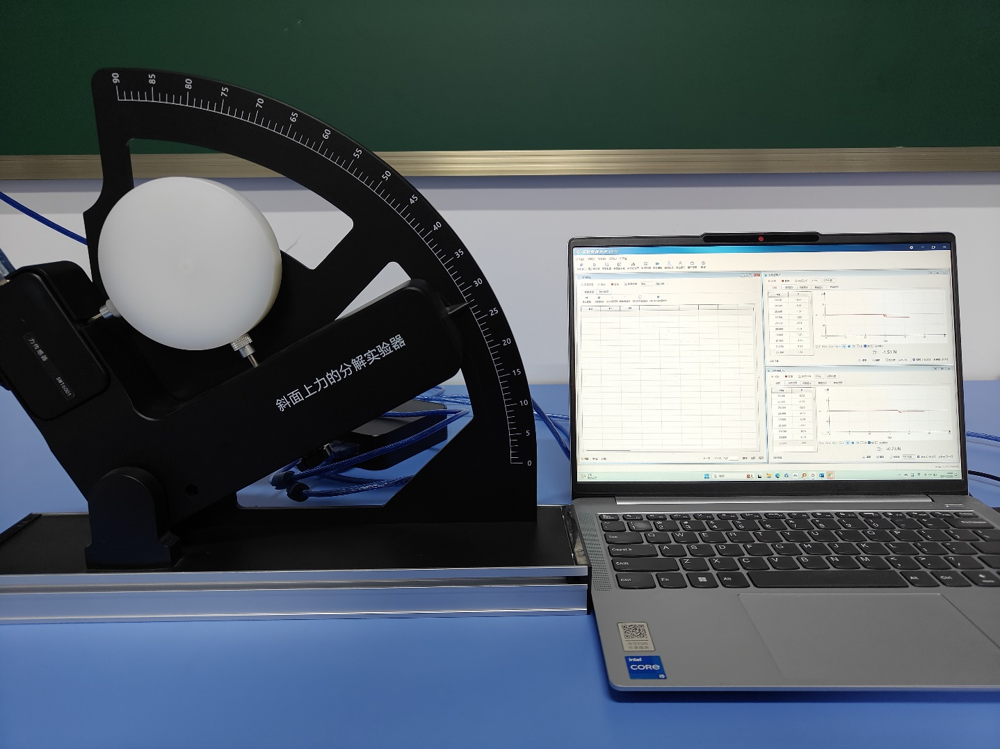
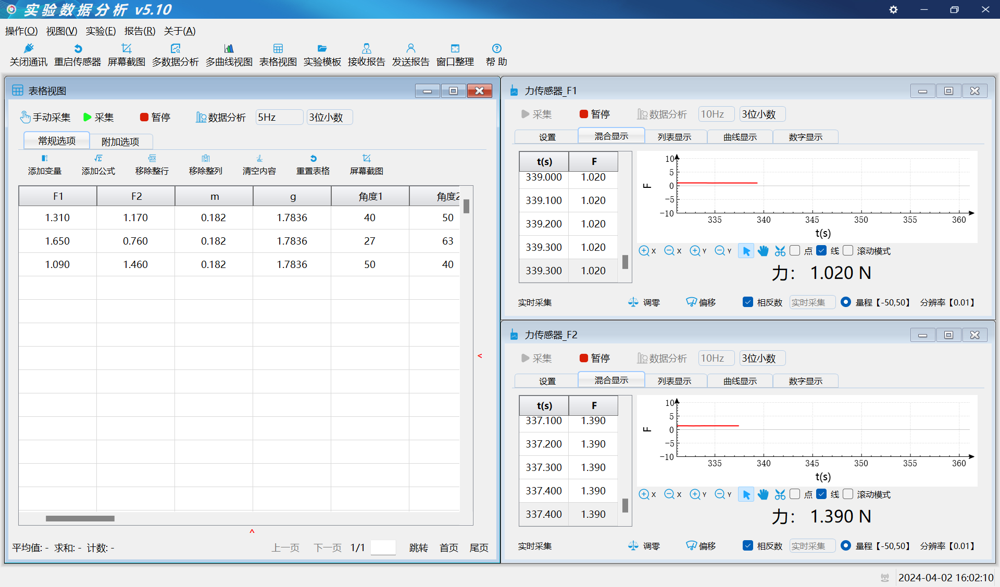
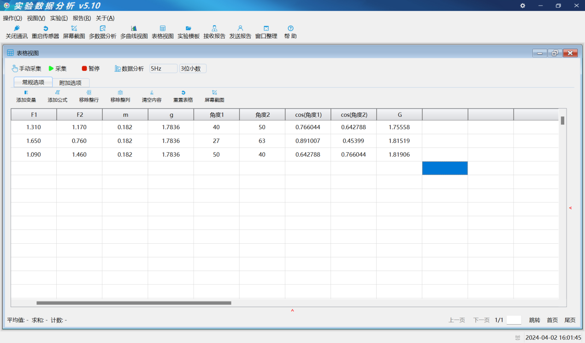

实验一 斜面上力的分解
【实验目的】
探究在斜面上的力的分解。
【实验原理】
力的平行四边形定则，是指两个力合成时，以表示这两个力的线段为邻边作平行四边形，这两个邻边之间的对角线就代表合力的大小和方向，这就叫作矢量的平行四边形定则；实验时将圆盘放置在斜面上力的分解实验器时物体受到三个力分别是：竖直方向的重力；平行于斜面的向上的支持力F1；垂直于斜面的向上的支持力F2。由于物体此时静止不动处于平衡状态，则根据力的平行四边形定则分析可知，此时重力可分解成两个与F1、F2方向相反，大小一样的力。
【实验器材】
数据采集器、斜面上力的分解实验器、两个力传感器、计算机等。
【实验装置图】

【实验操作步骤】
1：按实验装置图搭建好器材。
2：打开实验数据分析软件，连接好数据采集器和力传感器。
3：打开实验数据分析软件表格视图设置好公式，把力传感器值设置为相反数。
4：重复测试不同角度大小下的合力与重力的关系。

【思考与讨论】

了解了斜面上力的分解实验，特别是计算合力与重力的应用，对于实际生活中有哪些应用呢？